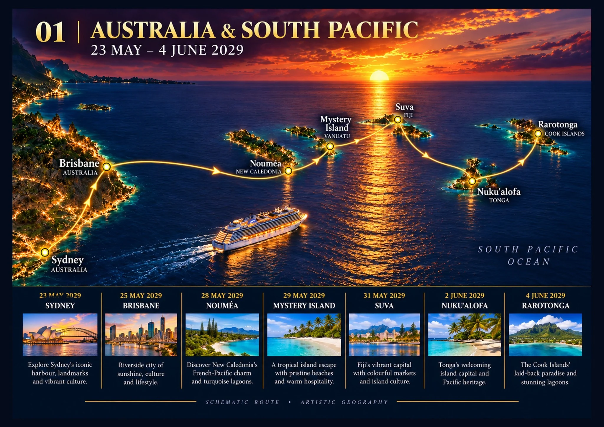

Chapter 01
Australia & South Pacific
23 May – 4 June 2029
We leave Sydney, call at Brisbane and head into the warm water of the South Pacific. Nouméa, Mystery Island, Suva, Nukuʻalofa and Rarotonga make this first leg feel like a holiday in its own right. There is plenty of time to settle into shipboard life between the island days.
